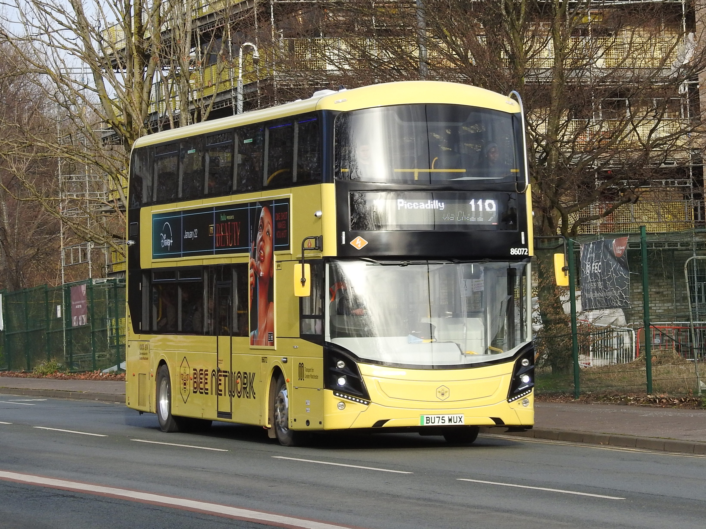

Middleton Bus Depot launches 50 new electric BZLs
This article is made from AI. This is temporary whilst a new article is written up. Middleton Bus Depot has taken a major step towards a greener future with the introduction of 50 brand-new electric buses. The new vehicles will help modernise the local bus network, providing passengers with a cleaner, quieter, and more comfortable way to travel. The new electric buses are part of a wider investment programme focused on improving public transport and reducing emissions across the region. As more operators move towards zero-emission fleets, these vehicles represent a significant milestone in creating a more sustainable transport network.
Investment
The introduction of the new electric BZLs represents a significant investment in the future of bus travel. The vehicles have been designed with the latest technology, offering improved efficiency while helping to reduce the environmental impact of everyday journeys. The new fleet will replace older diesel vehicles, reducing fuel consumption and lowering carbon emissions on routes operating from Middleton. Alongside the vehicles themselves, investment has also been made into charging infrastructure and depot facilities to support the operation of electric buses. The arrival of these buses highlights the continued commitment from operators and local authorities to improve air quality and encourage more people to choose public transport.
Passenger Benefits
Passengers travelling on the new electric buses will notice a range of improvements compared to older vehicles. The electric drivetrain provides a much quieter journey, reducing noise both inside the bus and within the communities it serves. The buses feature modern interiors with improved seating, USB charging facilities, real-time passenger information screens, and enhanced accessibility features to make journeys easier for everyone. With smoother acceleration and a more comfortable ride, the new vehicles aim to improve the overall passenger experience while providing a reliable alternative to car travel.
A Greener Future for Middleton
The arrival of the 50 electric BZLs marks an important moment for Middleton’s bus network. By introducing more zero-emission vehicles, the depot is helping to support national targets for cleaner air and more sustainable transport. As technology continues to develop, electric buses are expected to become an increasingly important part of public transport across the UK. The new fleet at Middleton demonstrates how investment in greener vehicles can benefit both passengers and the environment. For local passengers, the introduction of these buses means a cleaner, quieter, and more modern travel experience for years to come.